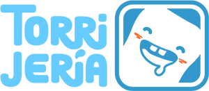

La Torrijería
Mailing de promoción para una marca ficticia, con diseño responsive en HTML y CSS. Conoce a nuestra mascota Torry.
Frontend Developer · UI · UX · Arquitectura CSS
Desarrollo interfaces claras, escalables y centradas en la experiencia de usuario, cuidando tanto el diseño como el código, con un enfoque práctico orientado a proyectos reales.
Frontend Developer con foco en crear interfaces claras, accesibles y fáciles de mantener. Me interesa especialmente el equilibrio entre diseño, experiencia de usuario y código bien estructurado.
Trabajo principalmente con HTML, CSS y JavaScript, cuidando los detalles visuales y la coherencia del proyecto a largo plazo.
Actualmente estoy ampliando mi perfil hacia entornos más orientados a negocio, como bases de datos SQL
y el ecosistema Salesforce, con el objetivo de evolucionar hacia soluciones digitales completas.
Con especial atención a los pequeños detalles.
Diseño y desarrollo interfaces enfocadas en la claridad, la accesibilidad y el mantenimiento a largo plazo, cuidando tanto la experiencia de usuario como la estructura del código.
En proyectos que lo requieren, utilizo frameworks modernos para estructurar la interfaz en componentes reutilizables y escalables.
Estoy ampliando mi perfil hacia el trabajo con datos y lógica de negocio, utilizando bases de datos para modelar información y resolver casos reales.
Trabajo con control de versiones desde el inicio de cada proyecto, priorizando procesos claros y un flujo de mejora continua.
Mailing de promoción para una marca ficticia, con diseño responsive en HTML y CSS. Conoce a nuestra mascota Torry.
Web interactiva inspirada en un universo de fantasía, diseñada como un compendio visual de personajes, regiones y objetos.
Web corporativa para un estudio creativo enfocado a soluciones digitales para pequeñas y medianas empresas, con un diseño profesional y orientado a negocio.
Minijuego web centrado en la rapidez de reacción y la gestión de estados, explorando lógica en JavaScript, eventos y feedback visual.
Simulación de un sistema de gestión de pedidos y clientes, enfocado en el uso práctico de bases de datos SQL y relaciones entre datos.
Proyecto orientado a la gestión de leads y procesos comerciales dentro del ecosistema Salesforce, centrado en datos y automatizaciones.
Si quieres hablar de proyectos, ideas o simplemente enviar un saludo, puedes escribirme aquí:
O escríbeme directamente a: david.ddcg@gmail.com